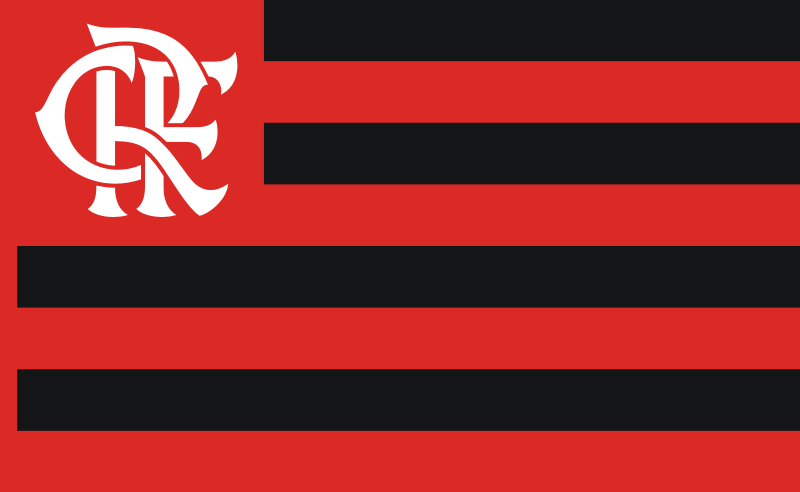

O Clube de Regatas do Flamengo (mais conhecido simplesmente como Flamengo, e popularmente pelos apelidos de Mengo, Mengão e Fla) é uma agremiação poliesportiva brasileira com sede na cidade do Rio de Janeiro, capital do estado de mesmo nome. Fundado no bairro de mesmo nome para disputas de remo em 17 de novembro de 1895, tornou-se um dos clubes mais bem-sucedidos e populares do esporte brasileiro, especialmente pelo futebol. Tem como suas cores tradicionais o vermelho e o preto e como seus maiores rivais esportivos o Vasco da Gama, o Fluminense e o Botafogo.
Para acessar o site oficial do Flamengo: Clique Aqui!